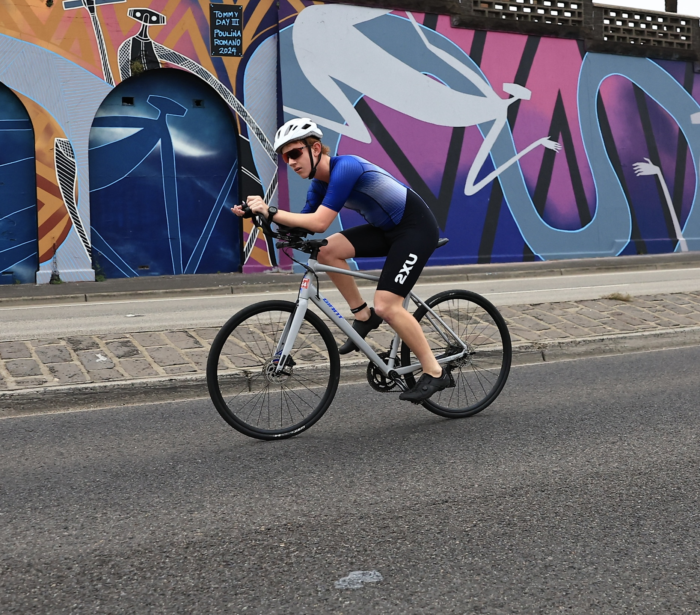
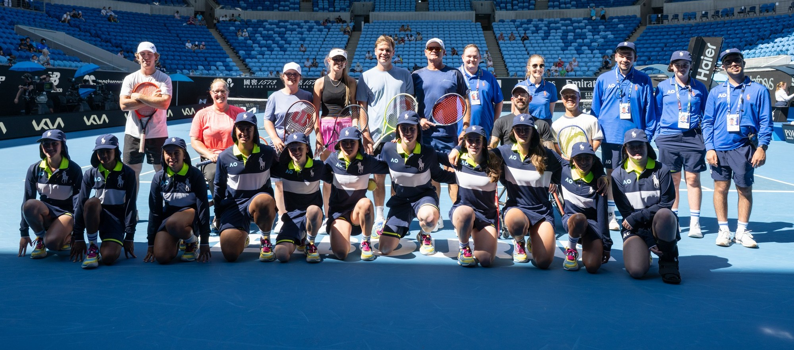

I’m Matthew, a 15-year-old from Australia. I love electronics and building small programs. Recently I made a Minesweeper AI, and right now an ASL sign-language detection app built with Apple’s ML features, with the goal of extending it into Auslan.
I’m also a PTS2 paratriathlete, a five-time National Champion, and a selected Team Vic athlete. Off the course, I was selected for the 2026 Australian Open Ballkid Squad and volunteer with the All Abilities program.
“Make something people want.”
Projects & Code
I love figuring out how things work and then building them. A few things I’ve made or am making:
- Auslan / ASL sign-language detection - an iOS app using Apple’s Core ML and Create ML to recognise hand shapes in real time. Starting with ASL, aiming for Auslan.
- Minesweeper-Ai - Python tool that reads the Google Minesweeper grid and suggests safe moves using a constraint-based solver.
- The School Exchange - an online marketplace I designed, coded, and launched for second-hand school uniforms, promoting sustainability and affordability.
Sport
I race as a PTS2 paratriathlete. Highlights so far:
- Selected Team Vic athlete for Para-triathlon Nationals
- Five-time National Champion (2024 & 2025) - Individual, Relay, and Aquathlon, WA Rockingham
- Winner, 2025 School Sport Australia Sportsmanship Award - one of only two nationwide recipients, for mentoring a first-time NSW para-athlete
- Winner, 2XU Triathlon Series (U18 Para) - 2023-24 and 2024-25 seasons
- 1st, 3000m U15 Boys Para at All Schools XCR - qualified for the 2025 Australian National Cross Country Championships
- 1st, SACCSS U14 Junior Boys (MC), 2025
- Regular in Run for the Kids, Run Melbourne, and the Melbourne Marathon events
- Swimming at State Championships, integrated with triathlon training
Australian Open Ballkid
I was selected for the 2026 Australian Open Ballkid Squad, and I volunteer with the tournament’s All Abilities program - a highlight of my year.

Community & Leadership
Faith & Justice Captain at Salesian College Sunbury. I lead community engagement projects and fundraisers, and I redesigned our Feast Day Walkathon course to make it more accessible and inclusive for students with disabilities.
As a Primary School Project Leader, I ran a $2,000 fundraising initiative to install a new cubby house for younger students, securing sponsorship from a local vet and coordinating logistics with the Principal, finance team, and suppliers.
Academics & Other
- General Excellence Scholarship award at Penleigh and Essendon Grammar School
- Keen interest in STEM, coding, and law
- Technical crew for school productions (Media Arts Day) - backstage lighting and sound
- Member of the DAV Debating Team, Conservation Club, Write Club
- Regularly delivers key messages at school assemblies (up to 1,700 students) and readings at student mass